Am beneficiat în mai multe rânduri de invitări la cursurile Universității de Vară „Episcopul Nicolae Popovici”, atât la începuturile ei romantice, la Jacu Românesc și la Făgețel, cât și mai apoi la cele cu mult mai instituționalizate, de la Izvorul Mureșului. Ele au ajuns la mine ca niște chemări irezistibile din tranșeea duhovnicească pe care o constituia Centrul de documentare „Mitropolitul Nicolae Colan” de la Sfântu Gheorghe, chemări la care nu puteai să nu răspunzi. (Chiar! Oare câți dintre intelectualii noștri „subțiri” știu măcar vag cine au fost toți acești admirabili episcopi și mitropoliți - Andrei Șaguna, Nicolae Bălan, Nicolae Colan, Nicolae Popovici etc. - și ce-au făcut ei pentru nație, binemeritând recunoștința noastră?) M-am dus de fiecare dată cu bucuria pe care mi-o promitea întâlnirea sau reîntâlnirea unor mai vechi cunoștințe, unele de tot tinere, purtându-și demn frumusețea și curăția vârstei, dar și cu vădita curiozitate de a afla mai îndeaproape, de la fața locului, realitățile unei zone considerată fierbinte și problematică, în ceea ce privește relațiile interetnice dintre maghiarii majoritari și românii minoritari acolo.
Așadar, voi povesti aici despre întâmplări mai vechi, fără să știu în ce măsură mai sunt relevante pentru situația zilelor noastre, probabil mai deteriorată.
Erau cel puțin trei motive importante, fiecare cu prevalența sa, care mă puteau conduce la mânăstirea Făgețel în anul 2000, unde urma să se desfășoare a treia etapă a Universității de vară.
Unul îl reprezenta prețuirea și dragul pe care le port părintelui profesor Ilie Moldovan de la facultatea de teologie din Sibiu. E veche această relație și, deși cu atâtea intermitențe, ca vinul cel bun, ea s-a limpezit și a căpătat tărie. Am admirat totdeauna suflul său neobosit și de o incredibilă vitalitate pentru tot ceea ce este autentic românesc, suferința pentru toată alunecarea de la trăirea în duhul cel mai autentic al tradiției ortodoxe și românești. Revederea și împreună petrecerea cu el îmi promitea de la bun început un spor în tot ceea ce se cheamă viață duhovnicească. El este inițiatorul entuziast și dinamizatorul neobosit al acestei aventuri duhovnicești, o atât de specială Universitate de vară. Fără el, nimic nu s-ar fi petrecut. (Ar fi de povestit aici o întâmplare extrem de semnificativă. După primele două etape, părintele Ilie, care, în ciuda tinereții sale fără bătrânețe, era, totuși, la acea vreme septagenar, care cu puțin înainte de începerea acțiunii suferise un accident de mașină, care are și alte suferințe adunate in timp, s-a simțit oarecum obosit și bolnav și s-a gândit să se retragă, spre oblojire, lăsând ultima etapă să se desfășoare fără el. Dar când a ajuns acasă, în Albeștiul natal, unde-și petrece vacanțele, tocmai se petreceau evenimentele legate de vizita bizară a premierului maghiar Victor Orban în România. Preoteasa l-a luat pe sus: „Părinte, nu vezi ce se întâmplă? Cum poți să abandonezi și să-i lași pe copii singuri? Du-te acolo, ce mai stai!” Și așa a plecat părintele mai departe, întărit și bucuros, uitând de orice durere fizică, pentru a se ocupa de grijirea rănilor sufletului etnic.)
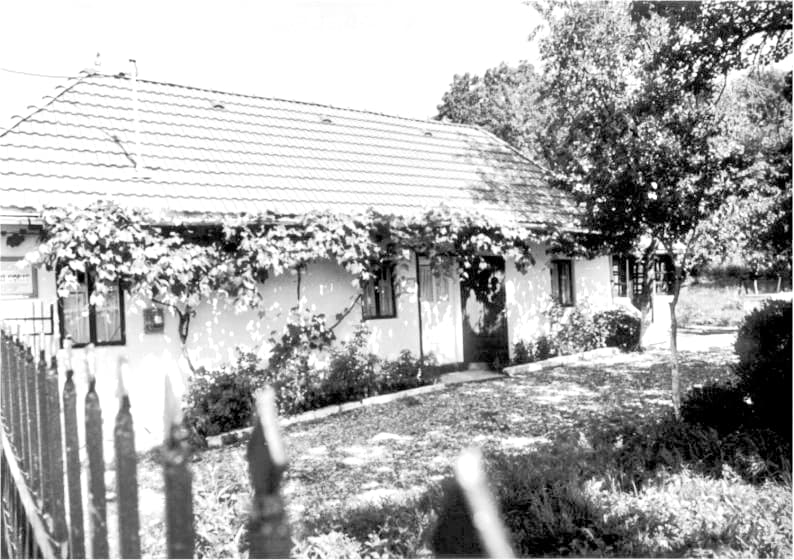
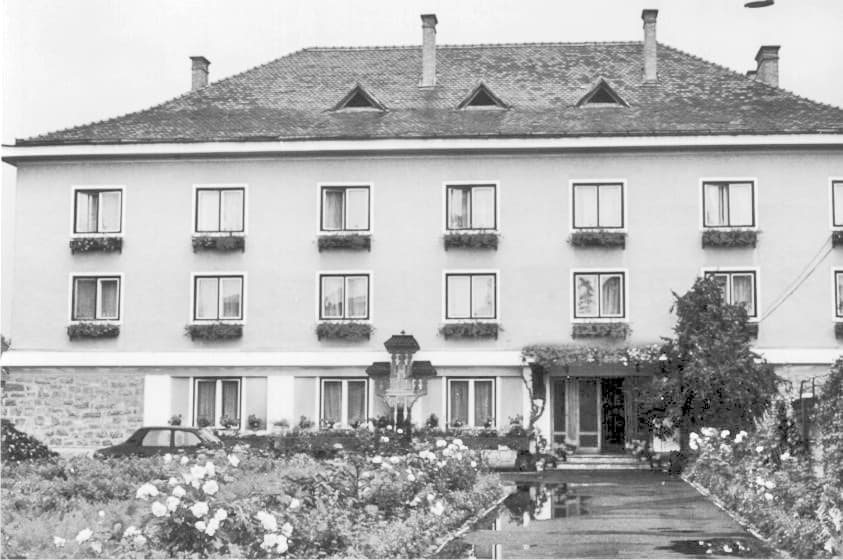
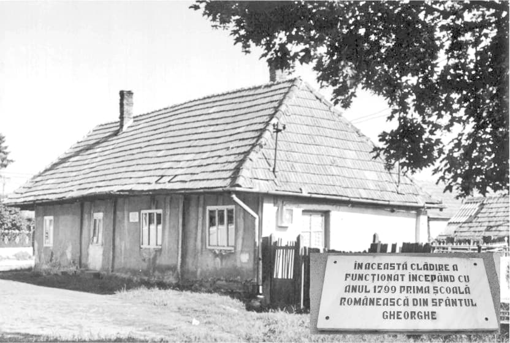
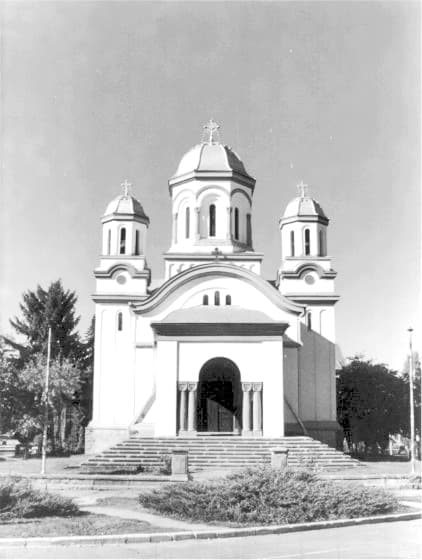
Un alt motiv, nu mai puțin important, a fost acela al unui mai vechi atașament spontan și vesel pentru tot ceea ce înseamnă ASCOR. În ciuda atâtor acuzații nedrepte ce li se tot aduc de oameni care nu le-au stat niciodată în preajmă, în ciuda unei anumite lipse de flexibilitate în ceea ce privește abordarea ariilor culturale, ASCOR-ul rămânea pentru mine o importantă și fortifiantă prietenie. M-am simțit totdeauna bine printre tinerii aceștia, puțin ciudați față de marea masă a celor de aceeași vârstă. M-a întărit mereu tinerețea lor curată, râvna lor pentru viața liturgică, plăcerea lor de a trăi cu Hristos, felul de a-și împodobi viața cu tot ceea ce ține de tradiție, cea împletită, a Bisericii și a neamului.
Pentru părintele Ilie și pentru ASCOR (de data aceea au fost implicate filialele din Sibiu și din Sfântu Gheorghe) m-aș fi dus oriunde. A existat, însă, și un al treilea motiv, inedit: organizarea etapei a treia a cursurilor Universității într-un loc aparținând unei zone fierbinți, pe care n-o cunoșteam și care-mi stârnea, în mod firesc, curiozitatea. S-a vorbit mult în anii aceia despre Covasna și Harghita, așa încât o descindere la fața locului promitea să conducă la o mai directă cunoaștere și la formarea unor impresii mai apropiate de realitate.
Iată-mă, așadar, în dimineața zilei de 27 iulie 2000 la sediul Episcopiei Ortodoxe de Covasna și Harghita din Miercurea Ciuc, unde am făcut joncțiune cu grupul venit în ajun, după miezul nopții, de la Jacu Românesc (județul Mureș). După o foarte scurtă întrevedere cu Preasfințitul episcop Ioan Selejan, toată ceata s-a suit gureșă într-un camion cu prelată, dintre acelea cu care Episcopia transportă materiale de construcție și alte mărfuri, și, fără să vedem ceva, am fost desantați după circa o jumătate de oră la mănăstirea Făgețel. Un părinte foarte tânăr și cu un chip de o incredibilă luminozitate ne-a întâmpinat. Primul lucru: cazarea. Aveam să aflăm că în tot ceea ce însemna organizarea acestei Universități acolo se implicase și unitatea de jandarmi din Miercurea Ciuc. Într-o veche fermă de oi, se pare, odinioară, cea mai mare din țară (pierdută, vorba Poetului, „în neagra veșnicie”, ca atâtea alte lucruri, după 1989), aparținând acum jandarmeriei județene, aveau să fie cazați cazon ascoriștii, în câteva dormitoare cu paturi suprapuse. La doi pași, Trotușul, încă nu departe de izvoare, tânăr și năvalnic, ispititor și abordabil. Eu („domn’ profesor”!?) aveam să stau cu părintele Ilie în singura chilie disponibilă eventualilor oaspeți, în clădirea încă atât de nouă a mănăstirii, față în față cu biserica. Înainte de a trece la alte istorisiri, trebuie subliniat faptul, oarecum surprinzător, că șeful amintitei unități de jandarmi, locotenent-colonelul Ioan Roman, un om mare la stat și mare la sfat, un excelent cunoscător al multor dintre cele ce țin de viața Bisericii, în duhul lor autentic, și un poet disimulat sub varii pseudonime, s-a constituit într-un adevărat înger ocrotitor al întregii acțiuni, veghind, când prezent, când din umbră, la buna desfășurare a tot ceea ce trebuia să se întâmple, pentru ca toată lumea să se simtă acasă și ocrotită în nevoile ei de orice fel.
Scopul principal al Universității l-a constituit o informare cât mai aprofundată și concretă, în varii domenii (istoric, politic, sociologic, etnografic, cultural etc.) asupra zonei și a problemelor ei dramatice, spre sensibilizarea celor prezenți în legătură cu ele și mobilizarea lor în vederea unor viitoare acțiuni de solidaritate și ajutorare.
Programul avea câteva componente structurale bine determinate. Generatoare și determinantă era cea liturgică. Ea le infuza și pe celelalte. Universitatea adopta, pe cât posibil, programul liturgic al locului. Nu e puțin lucru să participi în fiecare dimineață la Sfânta Liturghie sau ca fiecare miez de noapte să te afle mângâiat și liniștit de tainica slujbă a... Miezonopticii. Căci, acestea au fost reperele liturgice la Făgețel. O viață liturgică continuă schimbă fundamental dispoziția ființei, corectează raportarea ei la lume.
Drept „imn” al Universității fusese ales un minunat și vechi colind țărănesc, Legănelul, care ar merita să fie transcris în întregime pentru teologia lui subtilă și pentru frumusețea montării poetice și melodice.
Nu o să descriu cum s-a desfășurat amănunțit programul, în același timp universitar (cursuri și seminarii, zilnic, dimineața și după-amiaza) și de vacanță (plimbări pe dealuri, cules de fragi, potolirea setei la izvor de apă minerală, răcorirea în numeroasele pâraie, focuri de tabără etc.) al Universității. Aș dori mai degrabă să spun câte ceva despre unele lucruri pe care le-am aflat acolo și m-au cutremurat.
Covasna și Harghita reprezintă de o destul de lungă perioadă de timp un adevărat front, în care câteva grupuri relativ mici (tot mai mici!) de români, deși încercuite și supuse unor presiuni uriașe, se încăpățânează să încerce să reziste maghiarizării și aneantizării, să marcheze cu prezența lor zilnic eroică un loc ce aparține României (și nu mă refer, acum, atâta și în primul rând la stat, cât la spațiul spiritual). Ei sunt adevărați mărturisitori, martiri în sensul profund al cuvântului. Inima lor este cea care sângeră, duhul lor este schingiuit, și de conlocuitorii maghiari, și de „frații” români. Nu își doresc decât să nu li se spună că sunt străini la ei acasă și să fie tratați de această manieră stranie și inadmisibilă. Atât, acest lucru simplu și firesc, absolut nimic altceva. Sub ochii nepăsători ai autorităților române, uneori chiar cu complicitatea lor, sau în prezența unor discursuri demagogice sforăitoare ale unor forțe din opoziție, se petrece în Covasna și Harghita o veritabilă și neîntreruptă „purificare etnică” (deși, cred eu, cuvântul mai potrivit ar fi „poluare etnică”). Cum a fost posibil oare ca premierul Ungariei să poată descinde în mijlocul maghiarilor din România și să discute îndeaproape cu ei, depășindu-și adesea prerogativele și călcând bunul simț de oaspete, iar primul ministru român să nu găsească timp să se întâlnească cu etnicii români, atunci când a vizitat zona, imediat după instalare? Vorbim de ceea ce au făcut ocupația sovietică comunistă desnaționalizând Basarabia și Bucovina, dar de ce nu vedem și nu vorbim despre ceea ce s-a petrecut și se petrece în continuare în Covasna și Harghita.
Oamenii de acolo nu s-au plâns, dar am găsit în tot ceea ce ne spuneau ei spre informare multă obidă și multă jale. Se simțeau trădați și abandonați. Cei de la București (guvernații și opozanții de mai toate culorile, în egală măsură) îi negociază ca pe obiecte, vânzându-i pe te miri ce iluzie „europeană”. Așadar, tot ceea ce vă pot spune despre acolo, vine de pe un adevărat front de luptă spirituală.
N-am reușit niciodată și nici nu cred să pot vreodată să-mi trezesc sentimente sau resentimente antimaghiare. Toate experiențele mele personale cu unguri (puține și scurte, de altfel) au fost pozitive. Dar nu pot să nu-mi trezească mânie și silă cei ce se străduiesc fără încetare să-i asmută unii împotriva celorlalți pe oamenii simpli ai celor două etnii. Dacă sute de ani, maghiarii s-au comportat în Transilvania, din punct de vedere politic și social, cu destulă aroganță, considerându-se o nație superioară, ei totuși nu au fost animați de sentimente de ură. Românii s-au refugiat în acele vremuri foarte mult în credință și într-o excepțională cultură țărănească. Aceștia au fost pilonii rezistenței și dăinuirii lor. Dacă astăzi înregistrăm fenomene grave de desnaționalizare, apoi aceasta se datorează și povârnirii celor doi piloni. În plus, după Marea (și dreapta) Unire, maghiarii au fost animați mereu de regretabile sentimente și manifestări iredentiste și revanșarde, care nu i-au părăsit până astăzi. Ele au culminat în timpul ocupației hortiste a Ardealului, dar Horti nu a fost un vinovat izolat și atipic. Mă mai gândesc la fel și destui alții dintre conducătorii lor politici, adesea de o manieră evident francmasonică. Nu sângele românesc îi deranjează pe ei, ci limba și credința. Ei acceptă bucuroși orice asimilare a românilor prin maghiarizare și chiar duc până în zilele noastre o astfel de politică demografică regeneratoare (secuii își iau, adesea, neveste din Vrancea sau din Moldova, pe care le maghiarizează, copiii lor ne mai știind că au o rădăcină românească sau ignorând-o).
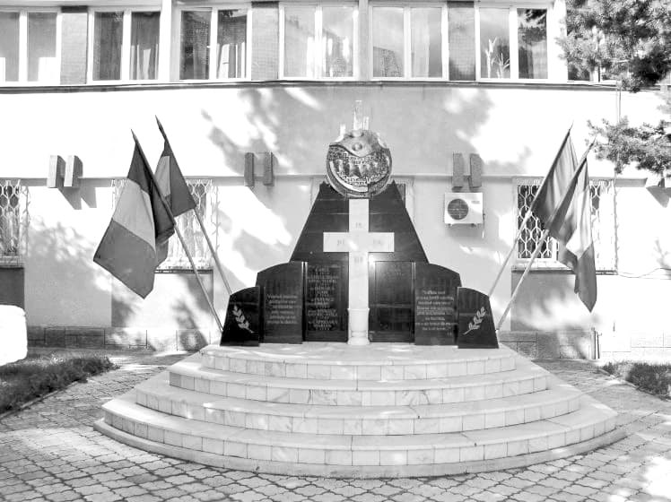
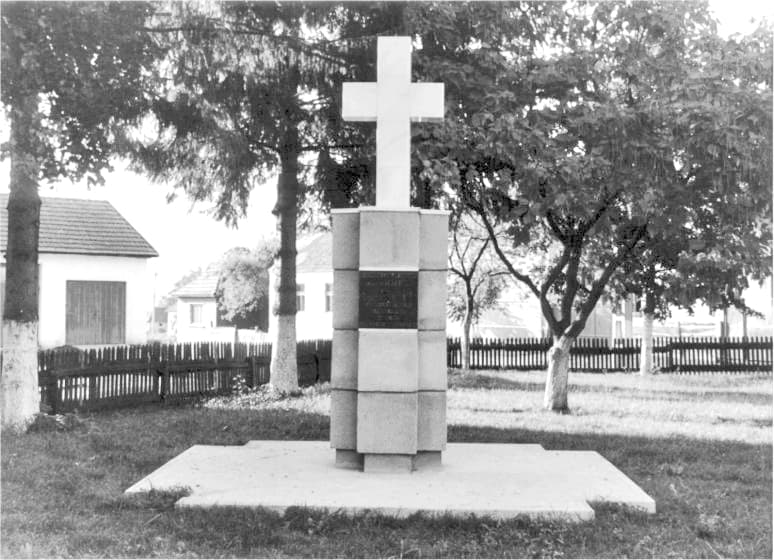
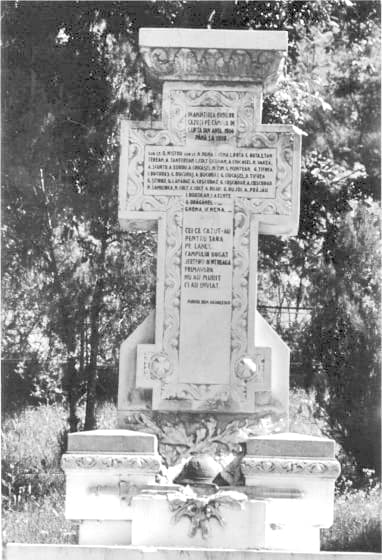
Lucrarea cea mai sigură și cea mai durabilă și cea mai serioasă în aceste locuri este, până la urmă, tot cea a Bisericii. Toate schiturile și mânăstirile care au renăscut sau s-au născut, toate bisericile aproape abandonate care s-au reparat în vremea din urmă reprezintă regăsirea și valorificarea a tot atâtea rădăcini în suferință. Pe călugări numai moartea fizică îi mai mută de loc. Nu poți decât ori să-i accepți, ori să faci din ei martiri și sămânța de martir mai abitir și mai durabil rodește. E nevoie de apostolat în acele locuri, e nevoie de cuvânt de bună vestire purtat cu curaj și cu riscul asumat al sacrificiului suprem, posibil în orice clipă. Oamenii de acolo așteaptă astfel de intelectuali apostolici, a căror țel în viață să fie cu o bătaie existențială mai lungă decât numai propria realizare profesională și socială într-o țară dezvoltată, cu ajutorul unei burse Soros.
Acolo aveam să înțeleg și cât de salutar a fost gestul celor de la ziarul Adevărul de a colecta fonduri pentru bisericile în dificultate din Harghita și Covasna. A fost poate unul dintre gesturile cele mai remarcabile ale gazetăriei românești din acei ani.
E greu de transmis cu suficientă precizie ceea ce este acolo. (Și acum o să reiau chemările pe care le făceam atunci.)
Trebuie mers și văzut și simțit! Însoțiți-vă câteodată, când puteți, cu acești tineri, în multe mai înțelepți decât părinții lor! Cântați cu ei cântecele acelea care însuflețeau pe românii curați la cuget în prima jumătate a acestui veac sau recuperați cu ei sublime cântări vechi din popor, de o subțirime spirituală și de un sublim binefăcător! Pe atunci, pe vremea moșilor noștri care au făcut Unirea, nu era o rușine să fi iubitor al patriei tale. Pomeniți-i pe toți cei ce au lăsat de o parte orice stare călduță și s-au jertfit pentru persistența spirituală și fizică a acestui neam și cântați-le: Veșnica pomenire!
Urmați, așadar, exemplul ascoriștilor!
Mergeți la Miercurea Ciuc să-l vedeți pe Preasfințitul Episcop Ioan, cum aleargă din zori până în noapte pentru a acoperi cele peste 100 de șantiere, aflate mereu în mare nevoință de sfat și de finanțe! Un om hulit deseori cu cuvinte grele de mediile maghiare. Și vedeți-i și pe cei doi protopopi (pe atunci părinții Constantin Ganea pentru Harghita și, respectiv, Gheorghe Rățulea pentru Covasna), oameni care și-au înțeles misiunea și au rămas pentru toată viața acolo, pe baricade spirituale, cunoscând amănunțit zona și luptându-se cu răbdare și insistență pentru orice adaos reîntemeietor, oricât de mic și de neînsemnat ar părea el!
Mergeți la mânăstire, la Făgețel, să-i vedeți pe cei șapte părinți și frați, veniți acum doi ani de la mânăstirea Toplița, pentru a lua totul de la zero, re-întemeind. Și să-i vedeți cum se scoală cu noaptea în cap, și se duc la munca câmpului, și cum intră la slujbă apoi, și cum iar se întorc la coasă sub arșiță sau la ridicat de ziduri sau la alte munci grele, și cum din nou biserica le alină după-masa spre seară oboseala cu vecerniile și utreniile ei, pentru ca lucrul să nu se sfârșească decât în noapte târziu, târziu de tot, urmat de pravila din chilie. Toate sub conducerea frățească a unui stareț tânăr, devotat și înțelept, părintele Andrei Moldovan, om duhovnicesc care și-a întrerupt studiile teologice, înțelegând că pentru o perioadă totul trebuie jertfit pentru punerea pe picioare a mânăstirii. La temelia mânăstirii stă jertfa ultimului ei stareț, ieromonahul Dionisie Șova, care a fost spânzurat la ușa bisericii de localnicii maghiari, pentru simplul fapt că nu și-a abandonat mânăstirea în ciuda „sugestiilor” repetate ce i s-au făcut în acest sens. Duhul jertfei lui era prezent și pomenit.
Mergeți la mormântul cam uitat al sublocotenentului Emil Rebreanu, care a preferat să fie spânzurat și să intre în rai, decât să verse sângele fraților mult așteptați și îndelung doriți spre unire după neam și după credință!
Mergeți la Joseni să priviți vechile cruci de piatră din cimitirul ortodox și să vă cutremurați de frumusețea lor!
Mergeți la Ditrău, o localitate de numai câteva mii de locuitori, beneficiind de o foarte mare catedrală catolică, frumos realizată în stilul ei gotic, mai ales dacă o raportăm la perioada extrem de târzie când a fost ridicată (1908-1913)! Încap în ea cu prisosință toți locuitorii târgușorului și poate și mai mulți, în timp ce biserica ortodoxă a fost distrusă, iar în fosta ei casă parohială funcționează acum un... bar.
Mergeți la Gura Secului să plângeți lângă oasele celor peste 700 de oșteni căzuți acolo în primul război mondial pentru eliberarea Topliței! Pomeniți-i din toată inima, căci nu spre nepăsarea noastră etnică au trecut ei Carpații și și-au lăsat ei tinerețea acolo, mutându-se în rai!
Mergeți la Toplița să vedeți ce a putut întemeia dragostea de pământul natal a întâiului nostru patriarh! O veche biserică de lemn, cu excepțională arhitectură aparte - o bijuterie, adusă acolo de patriarhul Miron Cristea. Intrați și în micul muzeu etnografic local, unde doi tineri încearcă să atragă atenția asupra culturii țărănești atât de bogate din zonă, pentru că, după 1989, toate muzeele de acest tip din zonă au devenit muzee „naționale” (!?!) ale secuilor. Și ieșiți câțiva kilometri din târg pentru a urca la mânăstirea „Biserica Doamnei”, cu superba ei biserică de lemn ctitorită la anul 1658 de Doamna Safta a domnitorului moldovean Gheorghe Ștefan, cu frumoasa ei așezare pe vatra unui vechi sat românesc, Moglănești, astăzi dispărut, din care se mai păstrează pâlcuri de pomi din vechile grădini!
Mergeți la Târgu Secuiesc să-l întâlniți pe părintele paroh Ștefan Nițu, purtându-și ca pe o rană mereu supurândă accentul pe care l-a căpătat atunci când a fost obligat să urmeze o școală ungurească, în lipsa uneia românești! O să-l întâlniți ca un oștean învechit în rezistență și în lupte, un om plin de cicatrice sufletești, dar decis să lupte până la capăt pentru Biserică și pentru România. O să-l vedeți mâhnit de lipsa de reacție a atâtor politicieni de vază, care nu ezită să se afișeze în fața electoratului cu sforăitoare discursuri patriotarde, dar care l-au lăsat fără răspuns atunci când au fost solicitați să ajute la construirea noii biserici din localitate. În timp ce-i ascultam discursul grav și emoționant, cineva a descoperit, disimulate sub o strană din dreapta, două figurine de ceară, una reprezentând un ungur, alta un preot, legate printr-o lamă de briceguț cu vârful înfipt în preot. O formă de vrajă-blestem.
Mergeți la Covasna să vă îngrijiți inima uitucă și să vă plimbați prin vechea cetate dacică din preajmă, lăsându-vă gândurile să coboare în istorie și în meandrele ei și în datoria pe care o are fiecare față de construirea ei împreună cu Dumnezeu!
Mergeți la Sfântu Gheorghe ca să-i cunoașteți pe cei de la foarte respectabilul Centru de documentare „Mitropolitul Nicolae Colan”, unde se încearcă a se aduna tot ceea ce este dată importantă despre românii din secuime! Stați de vorbă cât mai mult cu ei! Pe vremea aceea lucra acolo neobosit domnul Ioan Lăcătușu, o enciclopedie vie a locului, un om care și-a dedicat toată viața cauzei românilor din Covasna și Harghita. Astăzi continuă această lucrare la Arhivele Statului din București. Sunt sigur că Dumnezeu va fi cu el până la capăt și că-i va încununa toate aceste neobosite și dezinteresate strădanii pentru afirmarea identității românești originare în perimetrul Covasnei și Harghitei. Intrați și în subsolul catedralei (o catedrală dintre cele mai decente dintre câte s-au construit în acest secol în Transilvania, terminată, după multe emoții, în anii comunismului!) pentru a vedea în muzeu câteva icoane (de factură țărănească) și piese liturgice de o răpitoare frumusețe!
Și vor mai fi fiind mulțime de alte locuri care merită a fi cunoscute și recuperate în conștiința noastră de români, este drept, cam beteagă astăzi. Mergeți peste tot cu gânduri bune și cu brațe încărcate de flori! Mergeți prin sate să vedeți cât de mult se aseamănă secuii cu românii, casele lor cu casele noastre, crucile lor cu crucile noastre! Cât de bine ar fi conviețuit ei și astăzi și ce pământ paradiziac ar fi fost acest teritoriu al Covasnei și Harghitei dacă minți înfierbântate și nebune de la Budapesta și din alte locuri nu ar fi înveninat o atmosferă care amirosea peste veacuri a frățietate și bună înțelegere! Marile atacuri uzurpatoare asupra românilor își au apogeul aici în veacul din urmă. A fost o vreme când cele două etnii își transmiteau firesc cultură serioasă, a venit o vreme când localnicii secui sunt ideologizați și asmuțiți din exterior împotriva românilor. Mai trist este faptul că foarte mulți secui provin, la obârșie, din români maghiarizați pe varii căi. Astăzi au uitat și luptă fraticid împotriva românilor. S-a petrecut cam același lucru care s-a petrecut cu copiii creștini luați de prunci de turci, castrați și încorporați în armatele otomane, folosiți apoi spre distrugerea teritoriilor din care proveneau și a locuitorilor lor ce le erau neam.
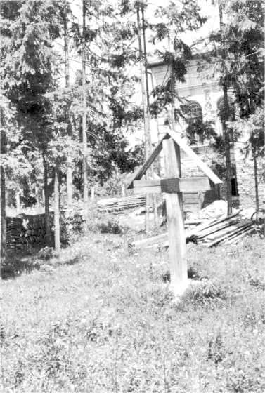
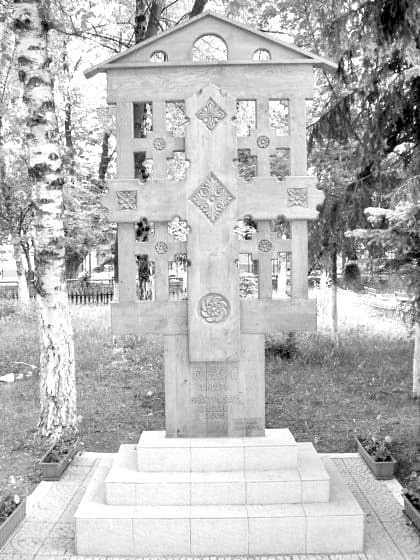
Mergeți să plângeți cu acei români care au fost abandonați de noi și obligați, în multe cazuri, de nepăsarea noastră și de spiritul acaparator maghiar să-și piardă limba și, o dată cu ea, și identitatea! Câtă dreptate avea poetul când spunea „Patria mea este limba română” (Nichita Stănescu)! De la limbă începe căderea sau ridicarea. Un om care și-a uitat și și-a părăsit limba este aproape definitiv des-țărat, el pactizează cu cei a căror limbă o poartă și, chiar dacă trăiește acasă la el, devine un străin sieși.
Dar, în chip poate paradoxal, eu am căpătat mult curaj tocmai în aceste locuri din Harghita și Covasna, confruntate cu o situație dramatică. L-am căpătat de la acei oameni excepționali care rezistă acolo și sunt hotărâți să reziste până la capăt, ba chiar să sporească pe cât se poate puțina avere spirituală ce le-a mai rămas de ocrotit. L-am căpătat de la acei minunați tineri, atașați valorilor naționale, iubind tot ceea ce este simplu și frumos românesc, tot ceea ce ține de o tradiție a cărei abandonare este păguboasă și conduce în cele din urmă la moarte spirituală și etnică.
Românilor de acolo le-aș spune că, oricât de dificilă și de dureroasă ar fi situația lor, să nu uite că sunt români. Vom răspunde la Judecată fiecare de neamul în care am fost așezați și de ce am făcut pentru el.
Secuilor le-aș sugera să nu uite că sunt în România. Și pentru un astfel de tip de uitare se va da seama. Să-și păstreze străvechea personalitate și disponibilitate secuiască. Nu vor fi niciodată puternici și siguri maghiarii în Covasna și Harghita dacă românii nu vor și ei siguri și puternici. Ei secuii ar trebui să fie cei dintâi care să se străduiască a asigura condițiile unei bune conviețuiri cu românii din zonă.
Celor din centrele culturale mai importante ale țării, și îndeosebi celor din București, le-aș ordona: „Treceți batalioane culturale Carpații!”. Nu de discursuri politice patriotarde au nevoie cei de acolo, nu de focuri de paie fals culturale și politice de tipul „Cântarea României” sau „Flacăra” sau „Și totuși iubirea”, ci de o solidaritate gravă, pură și simplă și sinceră și continuă și apropiată și uman exprimată. Căci în această luptă pentru supraviețuire, pentru dăinuire, cei mai dăruiți de Dumnezeu dintre noi, sunt chemați, în măsura în care-și iau în serios în fața lui Dumnezeu destinul de români, să meargă acolo și să strălucească spre întărire și încurajare. Cei mai de seamă artiști ai noștri să se producă acolo, pentru români și pentru secui în egală măsură, dar limba română să fie prezentă întotdeauna în hainele ei de gală, iar spiritul românesc în ceea ce are el mai frumos sărbătoresc (sărbătoarea văzută ca prezență și întâlnire mai accentuată cu Dumnezeu). Dar și noi, simpli credincioși, să facem un minim efort și să mergem în pelerinaj la mânăstirile de acolo la marile sărbători și la hramuri. Să facem o serioasă și eficace politică duhovnicească! Să întărim locul cu prezența rugăciunilor noastre, să investim iubire cât se poate! Să nu luăm în deșert darul lui Dumnezeu, ci să veghem întru sporirea lui! Căci dar al lui Dumnezeu sunt României și aceste preafrumoase și praplânse surori, Covasna și Harghita.
La București (și în alte părți, desigur, dar eu vorbesc de București ca de un loc reprezentativ pentru întreaga țară) nu există aproape nici o sensibilitate autentică pentru problemele românilor din Covasna și Harghita și, în consecință, s-a pierdut, în îngrijorătoare măsură, conștiința apartenenței acestor ținuturi la spațiul românesc. În fapt, ele sunt aproape abandonate. Semnificativ este, în acest sens, faptul că în timp ce în acei ani, 1999-2000, s-au perindat pe acolo mai toți membrii guvernului maghiar (unii chiar în 2-4 rânduri), în frunte cu premierul de atunci, Victor Orban, miniștrii din executivul de la București nu și-au aflat timp pentru acest lucru. Pragmatismul sinistru al politicienilor noștri de toate culorile îi conduce probabil la concluzia că, oricum, de acolo nu se poate scoate un număr prea mare de voturi. În mod destul de criminal, în loc să fie preocupate de apărarea intereselor românilor din secuime, partidele noastre preferă să poarte acerbe lupte fratricide, alimentate de miri ce orgolii. În timp ce ungurii sunt mai mulți și uniți, politicienii români sunt de tot dezbinați. La acest spectacol jalnic, oamenii onești nu pot decât să încerce sentimente de tristețe și chiar de lehamite.
Absența celor din zona politicului, mai mult sau mai puțin explicabilă prin condiția precară, din punct de vedere al caracterului, a celor ce și-au asumat, cel mai adesea atât de oportunist, această condiție, este însoțită de o și mai regretabilă absență a celor din lumea culturii. Unde sunt turneele marilor trupe de teatru, unde sunt concertele, unde sunt vernisajele pictorilor importanți, unde sunt conferințele intelectualilor de marcă ai țării? Lipsesc cu desăvârșire! Căci eu cred că un ajutor real și eficient poate fi dat românilor de acolo nu prin susținere de inflamate și inflamante discursuri patriotarde, ci prin afirmare culturală puternică, prin propuneri spirituale de valoare incontestabilă, în care, indiferent de tematica abordată, recunoașterea necesității unei corecte conviețuiri, bazată pe respectul reciproc al calităților, să vină aproape de la sine.
În tot acest context, singură Biserica noastră Ortodoxă își urmează discret, dar neabătut, calea, vocația și menirea, neabandonând nici o clipă lupta spirituală. În 1990 a fost creată Episcopia Covasnei și Harghitei și în fruntea ei ales, în chip providențial, parcă nu atât prin calcule omenești, cât prin insuflare divină, episcopul Ioan Selejan (astăzi arhiepiscop). Îl poți afla acum, modest și neobosit, în fiecare zi pe un alt șantier, din cele cam 100, mai mari sau mai mici, care se află în cuprinsul eparhiei. Când îl vezi în rasa-i de lucru, roasă și nesfârșit cârpită, decolorată de timp, când îi vezi mâinile bătătorite de folosirea uneltelor, când îi vezi chipul mereu preocupat, ars de soare și de vânt, înconjurat de o barbă învolburată pe care grijile i-au albit-o mai repede, ai sentimentul unui vechi oștean, veghind mereu rugător nu numai pentru fiii pe care Dumnezeu i-a încredințat spre păstorire, dar și pentru un întreg neam care a însămânțat în repetate rânduri acele locuri cu oasele sale și l-a semnat cu sânge de eroi, spre validare în fața lui Dumnezeu. Cât de potrivit se împacă în acest om forța și hotărîrea faptei cu discreția și dragostea părintească. Evită cu tot dinadinsul să iasă în evidență, dar pune tot sufletul său ca ceea ce face să fie evident și roditor. Trebuie bine înțeles că nu este vorba acum de elogiul unui arhiereu (fapt secundar), ci de evidențierea unui mod evanghelic sănătos de implicare în istorie și de asumare a responsabilității în fața semenilor și a lui Dumnezeu. Prin el și prin colaboratori apropiați jertfitori lucrează Dumnezeu și Biserica Sa acolo, zidind biserici și mănăstiri, în ciuda unor forțe umane restrânse și a unor mijloace materiale destul de modeste. Este ca și cum ai fixa cu arbori un teren ce stă să se povârnească. Biserica este singura în care românii din Covasna și Harghita găsesc adăpost spiritual și capătă curaj de a-și continua existența în acele locuri, care le sunt de baștină, dar din care se caută, mai fățiș sau mai ascuns, să fie îndepărtați. Când vorbesc de Biserică, nu mă refer numai la Preasfințitul Ioan sau la cler, ci la fel de apăsat și la toți care s-au pus acolo în slujba cauzei prezervării valorilor românești, căci toți o fac asumându-și total condiția de fii ai Bisericii. Pe atunci erau aceștia: Ioan Lăcătușu, Violeta Pătrunjel, Ioan Roman, istoricul Ilie Șandru, muzeografii Dorel Marc și Zorel Suciu etc. În ceea ce-l privește pe colonelul Ioan Roman, un om inimos și cald, cu o foarte serioasă cultură generală, inclusiv teologică, nu mi-am putut stăpâni gândul că atâta vreme cât un șef al trupelor de jandarmi citează foarte pertinent din Cioran în cuvântul său, mai există o șansă reală pentru această țară, spre a ieși într-o bună zi la liman. Și tot la oamenii locului l-aș trece pe blândul și dârzul părinte Ilie Moldovan de la Sibiu, pentru că el și-a însușit cu totul condiția dureroasă de român din secuime. Este de neînchipuit cât de neobosit și de frumos suferă acest părinte pentru românitatea sa, cum fiecare fibră a sufletului său arde (și îl arde) pentru izbăvirea neamului căruia îi aparține, apartenență pe care o vede, așa cum se cuvine, ca pe un dar al lui Dumnezeu.
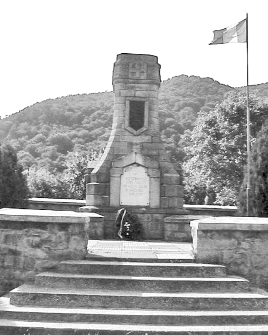
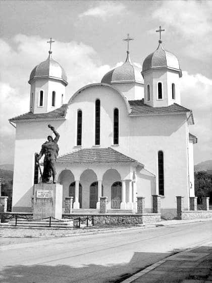
În legătură cu cele arătate mai sus, aș dori să amintesc aici numai unul dintre multele momente impresionante ale acelor zile. Enoriași din Gheorgheni au așteptat cu îngerească răbdare și cu dor nădăjduitor timp de mai bine de două ore pe cursanți în biserica lor, pregătiți să-i întâmpine cu artose și cu băuturi răcoritoare. Ce dezamăgire ar fi fost dacă aceștia, mult întârziați cu programul, ar fi decis să nu se mai abată pe la Gheorgheni! La sfârșitul micii agape, o femeie s-a apropiat cu lacrimi în ochi de părintele Ilie și i-a șoptit apăsat: „Părinte, să nu ne lăsați!”.
Unii, cei de departe (și nu mă refer atât la distanțele fizice, ci la cele sufletești, denotând infirmități grave în acest loc de grație al ființei), se vor întreba dacă sunt cu adevărat probleme serioase cu românii din Covasna și Harghita. Și destui vor avea, poate, tendința să se îndoiască de acest lucru, până la ignorare. La fel de periculoasă este exagerarea pasională a acestor probleme, bazată tot pe necunoaștere, care ar putea conduce la reacții precipitate, lipsite de conținutul autentic creștin, absolut necesar pentru rezolvarea unor astfel de situații. Există, fără umbră de îndoială, o anume presiune care se exercită, fără încetare, asupra românilor care continuă să se încăpățâneze să locuiască acolo, considerându-se nu străini, ci acasă. O presiune internă, însă alimentată extrem de activ din exterior, ațâțată chiar, s-ar putea spune, în condițiile de astăzi, extrem de favorabile celor ce doresc acest lucru, mai ales și când știu să-l exercite folosindu-se de umbrela unor „libertăți” statuate de comunitatea internațională. O presiune care se manifestă psihologic, economic (ungurii caută să cumpere cât mai mult, foarte adesea cu ajutor financiar venit din afară), politic, cultural. Cum dețin majoritatea absolută în majoritatea organismelor locale, maghiarii își realizează cu lejeritate politica, cel mai adesea discriminatorie. Un singur exemplu: în timp ce românilor li se refuză ridicarea unei troițe pe locul unei biserici distruse la Ditrău în 1940, pe vremea ocupației hortiste, ungurii ridică, mai peste tot în Ardeal, numeroase monumente dedicate unor „eroi” ce s-au evidențiat prin uciderea de români! Covasna și Harghita nu sunt teritoriul unui război fățiș și nici nu-l văd devenind așa ceva. Dar, în subteran, o luptă surdă și acerbă tot se poartă, pe căi insidioase, care tind să conducă la rezultate similare. Ungurii caută pe tot felul de căi să-i îndepărteze pe români, iar aceștia încercă încă să reziste și să-și fixeze cât de cât poziția atât de expusă în momentul de față.
Există un proces de maghiarizare imperceptibilă a românilor, precum și unul nezgomotos, dar continuu de izgonire a lor de acolo. În aceste condiții, starea românilor rămâne una de rezistență, de apărare în așteptarea unor situații mai aproape de normalitate pentru oameni care trăiesc în țara lor și doresc să se simtă ca atare. Din păcate, într-un fel, cu mult mai responsabil se preocupă maghiarii din Ungaria de etnicii lor minoritari din România, decât românii de frații lor minoritari în Covasna și Harghita, deși îndreptățirea le-ar fi alta, mult mai motivată.
Sunt multe întrebări care se impun firesc celor ce reflectă cu onestitate, sine ira et studio, la situația din Covasna și Harghita. Ce înseamnă identitate națională astăzi? Încotro ne îndreptăm, din acest punct de vedere? Ce înțelegem prin conștiință națională? Cine este „proprietarul” unui teritoriu? Cel cu anume drepturi istorice? Cel care pe varii căi, dar foarte adesea oculte și necinstite, reușește să promoveze și să impună dreptul celui mai puternic? Cum pot conviețui cumsecade două etnii pe același teritoriu, luptându-se nu pentru anihilare, ci pentru reciprocă afirmare, prin iubire și dăruire? Cine le poate arbitra nepărtinitor întru veșnică împăcare?
Până la urmă, problema națională nu poate fi tratată decât teologic și nu-și poate afla rezolvarea ei corectă decât în cadrul credinței creștine, căreia, într-o măsură mai mult sau mai puțin corectă, îi aparțin toți locuitorii ținutului respectiv. De fapt, mă gândesc că o analiză cu sorți mai mari de a afla adevărul și calea de urmat ar trebui pornită de la această întrebare: ce s-ar întâmpla dacă acum Hristos S-ar pogorî în trup pe pământ, acolo, în Covasna și Harghita? Ce le-ar spune El ungurilor și ce le-ar spune românilor? Și, la rândul lor, ce I-ar răspunde aceștia Lui? Aceasta rămâne o poveste de depănat altădată.
Cutremurător este, însă, tocmai faptul că, El chiar este prezent acolo, mereu. Nevăzut, dar și întrupat euharistic, în potirele de pe sfintele altare! Să nu-L dezamăgim!
AXA NOASTRĂ: ÎNTRE DUMNEZEU ȘI NEAMUL ROMÂNESC